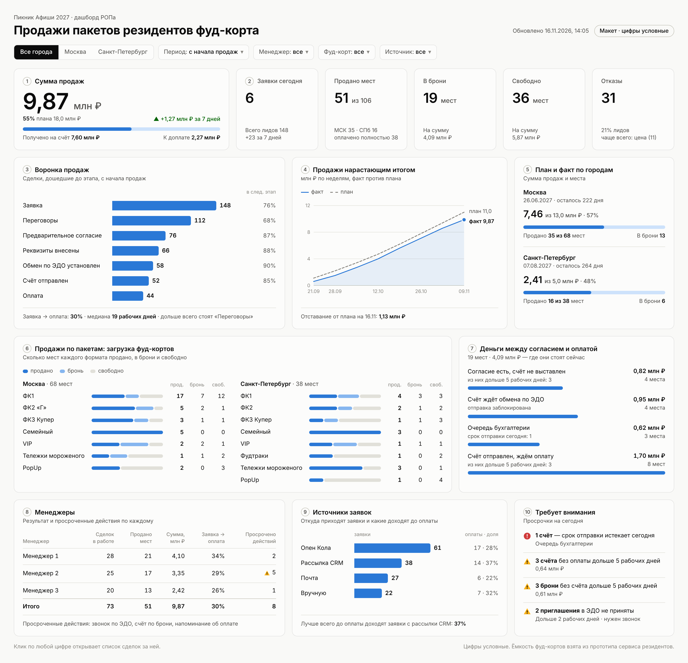

Пикник Афиши 2027 · ТЗ для отдела автоматизации CRM
РОП на одном экране видит, сколько продано и сколько осталось, на каком этапе застревают сделки и деньги, и что нужно сделать сегодня.

Номера в кружках на макете совпадают с номерами блоков в таблице ниже. Цифры условные. Настоящая только ёмкость фуд-кортов: 68 мест в Москве и 38 в Петербурге, она взята из прототипа сервиса резидентов.
Главная цифра, процент плана, прирост за 7 дней, получено на счёт, к доплате.
Сумма счетов по проданным местам. План задаётся вручную. К доплате = сумма продаж − получено.
Заявки сегодня и всего лидов; продано мест из ёмкости; бронь; свободно; отказы и главная причина.
Места и рубли по определениям выше. Отказы — закрытые сделки с причиной из справочника.
Сколько сделок дошло до каждого этапа и какая доля перешла в следующий. Внизу: итоговая конверсия, медиана рабочих дней от заявки до оплаты, этап с самым долгим простоем.
Этапы: заявка → переговоры → предварительное согласие → реквизиты → обмен по ЭДО → счёт отправлен → оплата. Сделка считается на этапе, если хотя бы раз до него дошла.
Факт против плана по неделям, отставание или опережение в рублях.
Сумма продаж накопительно на конец каждой недели. План по неделям задаётся вручную.
По Москве и Петербургу: сумма и процент плана, продано мест из ёмкости, бронь, дней до фестиваля.
То же, что блок 1, в разрезе города. Даты фестиваля: Москва 26.06.2027, Петербург 07.08.2027.
По каждому фуд-корту и формату: сколько мест продано, в брони и свободно.
Число мест в каждом состоянии из справочника мест. Продано + бронь + свободно равно ёмкости.
Где стоят забронированные места: согласие без счёта; счёт ждёт обмена по ЭДО; очередь бухгалтерии; счёт отправлен, ждём оплату.
Места и рубли на каждой остановке. Отдельно: счета со сроком отправки сегодня и те, что ждут дольше 5 рабочих дней.
По каждому менеджеру: сделок в работе, продано мест, сумма, конверсия заявка → оплата, просроченных действий.
Просроченное действие: не позвонил по непринятому приглашению в ЭДО, не выставил счёт по брони, не напомнил об оплате.
Заявки, оплаты и доля дошедших до оплаты по каждому источнику.
Источники: Опен Кола, рассылка CRM, почта, вручную. Источник — обязательное поле сделки.
Список просрочек на сегодня, самые срочные сверху.
Срок отправки счёта истекает сегодня; счёт без оплаты дольше 5 рабочих дней; бронь без счёта дольше 5 рабочих дней; приглашение в ЭДО не принято 2 рабочих дня.
Метрики самих рассылок — открытия, клики, отписки — в этот экран не входят. Рассылка здесь видна только как источник заявок.